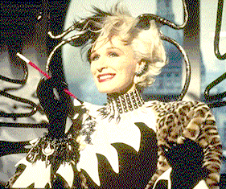

Contents | Features | Reviews | News | Archives | Store |
 |
|
| Movie Credits | Buy It! |
101 Dalmatians
Review by Carrie Gorringe
|  | Directed by Stephen Herek. Starring Glenn Close,Jeff Daniels, Screenplay by John Hughes, |
It seems that Roger (Daniels) and Anita (Richardson) were simply meant for each other -- or at least their dogs, Pongo and Purdy, think so. These dalmatians with overactive hormones manage to persuade their respective owners to marry and create a blissful household, one that is soon filled with new puppies, a loving nanny (Plowright) and a new baby on the way. Well, there are a few problems on the road to happiness. Roger, a designer of computer games by trade, is having trouble landing contracts. Anita’s problem, however, threatens to overthrow everything she and Roger have worked for. Anita is one of the favorite designers of the House of De Vil, presided over by the decidedly sinister Cruella (Close). De Vil takes Anita’s sketches, which have been inspired by animal prints, and utilizes the real thing, regardless of how endangered the animal. One day, Cruella’s gaze falls upon a design incorporating black-and-white spots and seizes upon the idea of making the coat from puppies -- Roger and Anita’s puppies, in fact. When temper tantrums, large checks and a termination of employment fail to move the couple, Cruella sends two of her henchmen, Jasper (Laurie) and Horace (Williams), to dognap the specimens in question so that her personal taxidermist, Skinner (Shrapnel) can, um, attend to them as soon as possible. Of course, her plan is soon exposed, and everyone is in hot pursuit of Roger and Anita’s puppies, as well as the other dalmatians Cruella has captured -- ninety-nine in all, plus two frazzled canine parents, for a total of one hundred and one.
As is well-known by now, this new version of 101 is a live-action version of the much-beloved animated classic from 1961, and I admit to having had many suspicions, not to mention outright trepidation, over what this remake might accomplish. How can one effectively accomplish the conversion of a cartoon into a live-action film without surrendering many of the cartoon-like features, especially the limitless sense of movement and visual formations, that made the original so magical? The result of all this tinkering, admittedly, is somewhat uneven overall, but has some truly remarkable moments.
The weaknesses, surprisingly, generally don’t come about from the transition from animation to live-action via special effects; many of the recreations cast a fine sense of illusion and "realism;" only one computer-matched shot, of a puppy emerging from a drain pipe, looks really clumsily executed, and it’s not on screen long enough to detract from the cumulative effect. Instead, the film is weakest when it dwells upon the lives of Roger and Anita. For whatever reason, both Daniels and Richardson, so fine in other performances, simply don’t generate enough enthusiasm here for audiences to fall in love with them; their initial "meet-cute" and subsequent relationship has a pall of blandness about it that threatens to cast a similar pall over the rest of the film. In particular, Richardson’s portrayal of Anita is characterized initially by an excess of emotional constraint, as if the actress is hesitant about investing herself in the role; unfortunately, she never really loosens up enough throughout the course of the film to provide the necessary spark of authenticity required by the lightening-quick development of the relationship between Roger and Anita. Joan Plowright attempts to brighten things up overall, but, given the limited constraints around her character, she is soon reduced to two modes of expression: happy fussiness and panicked fussiness. The sweetness here is so sticky, and, at times, so patently false, that you could drown in it -- not an uncommon situation in traditional Disney products; since this film’s pedigree dates from the immediate post-Walt period, it’s not surprising that it retains elements of this overbearing sentimentality.
Fortunately, the filmmakers preserved that second most important of traditions in Disney films: great villains and comic henchmen that can act as a counterpoint to all of the sweetness and light. Nothing could have been more effective in this case than to render Cruella’s personality more vibrant than the two-dimensional cels on which she originally sat (and she wasn’t all that milquetoast to begin with). In this version, Cruella is more than simply an evil means to a happy ending. and, as the villainous center of the piece, Close is absolutely magnificent, Dahling. Screenwriter Hughes helps the cause along by giving Close much of the best dialogue and many excellent situational setups. Close’s performance obviously owes much to her recent Tony-winning portrayal of Norma Desmond on Broadway; it also suggests images of the outrageous Tallulah Bankhead in her campiest period during the 1960s, especially in Close’s vocal phrasings that act as an homage to the breathlessly languorous and insolent drawl that rolled from Bankhead’s mouth. It was refined, but with a hint of depravity never far from the surface (a symbolic advertisement, perhaps, for the outrageous life of the actress herself), and its inclusion here gives Cruella’s character just the right flavoring for an arch villain. Indeed, the tone is set from the very beginning of the film when the lady hisses with sardonic disdain at an unfortunate assistant, "What kind of a sycophant are you?" After a few false starts, the factotum finally manages to stammer, "What kind of sycophant would you like me to be?" Yet, Close never indiscriminately devours her role to the point of cannibalism, though she flirts with the possibility just often enough to make things interesting; instead, she responds by savoring every syllable provided as if it were the finest caviar, and then spitting them out with malicious glee. Close is also amply assisted by Oscar-winning costume designer Anthony Powell who, along with Rosemary Burrows, has clad the nasty Ms. De Vil in clothes as angular and ice-cold as her personality; never before has fur seemed so uninviting (except, perhaps, to a PETA member), nor has the expression "bad hair day" ever been so aptly demonstrated (courtesy of Paul Huntley’s wigs). This De Vil is malevolently De Vine.
In addition, there is no discounting the considerable benefits to be gained when one fine performance is complemented (and complimented) with the addition of excellent comic support. Laurie and Williams make a masterful pair of bumbling fools (as the butt of nearly every evil plan that goes awry, Williams has a wonderfully plastic face on which the most exquisite of dimwitted expressions are made manifest both before and just after any given moment of doom), and Shrapnel is sufficiently menacing as the strong, silent and sinister type. In sum, there are pleasures to be had from this new, and improved, 101 Dalmatians. So, a word of advice: let the first half hour of this film wash pleasantly over you, take pleasure in the special effects and the dalmatians, and then wait for Cruella and co. to take over. You won’t be disappointed.
Special note to animal lovers: Fears have been expressed that the animals used in this film, (in particular, the puppies) were possibly subjected to abuse, no matter how inadvertently caused. As a matter of fact, according to the filmmakers, all of the animals were given the finest care available. Special climate-controlled shelters were constructed, anyone working with the puppies had to undergo a stringent disinfection process beforehand and the filmmakers worked around the puppies’ schedule, rather than the other way around. In addition, the filmmakers used special effects at any time when there was even the slightest chance that an animal would be placed in danger. If there is any doubt in your mind as to the veracity of this report, I encourage you to see the film for yourself. Signs of animal abuse are almost impossible to hide, no matter how skillful the camera angles and edits, and I could not find any evidence of it in this case.
Contents | Features | Reviews | News | Archives | Store
Copyright © 1999 by Nitrate Productions, Inc. All Rights Reserved.